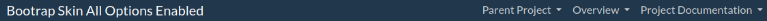
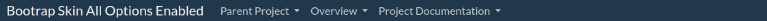

Getting Started
- Overview
- Banner Bar Configuration
- Navbar Configuration
- Project Info Bar Configuration
- Sidebar Configuration
- Footer Configuration
Layouts
Development
Project Documentation

#Navigation Bar
By default the skin will generate a Fixed Navbar, however there are a number of configuration options to change the design of the navigation bar.
The skin allows you to disable or enable the naviation bar by setting a custom element, as shown below:
```xml
<project name="xxx">
[...]
<custom>
<bootstrapSkin>
<navbar>
<enabled>true</enabled>
</navbar>
</bootstrapSkin>
</custom>
[...]
</project>
The bootstrap navigation bar has the concept of ‘navbar-brand’, this is a section of the navigation bar that can be used to advertise the product name and provide an icon. By default the project name (as defined within the POM) is used as the name of the brand, however you are able to define an icon as well.
<project name="xxx">
[...]
<custom>
<bootstrapSkin>
<navbar>
<icon>
<alt>test</alt>
<href>#</href>
<src>image/example-logo.png</src>
</icon>
</navbar>
</bootstrapSkin>
</custom>
[...]
</project>
Similar to the banner bar the icon element can contain the same attributes as the <img> tag. If the icon element is left blank then no icon is added to the page, as a minimum the navbar-brand icon requires a alt or src attribute for something to be displayed.
You can configure the CSS classes used on the navbar style. Bootstrap 5 contains a number of classes for common colouring, by default ‘navbar-dark bg-primary’ has been set as this provides a clear contrast between the banner and the main text.
<project name="xxx">
[...]
<custom>
<bootstrapSkin>
<navbar>
<style>bg-light</style>
</navbar>
</bootstrapSkin>
</custom>
[...]
</project>
By default the Navigation bar will place the drop down menu on the right side of the navigation bar like so:

This can be changed by setting the menu orientation value within the site.xml, the acceptable values are left and right. Below is an example where the orientation has been set to the right.
